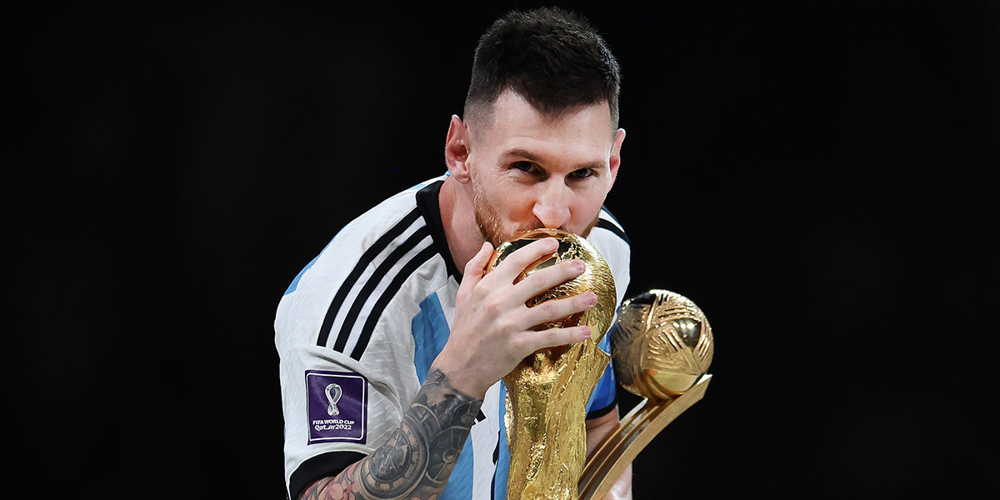
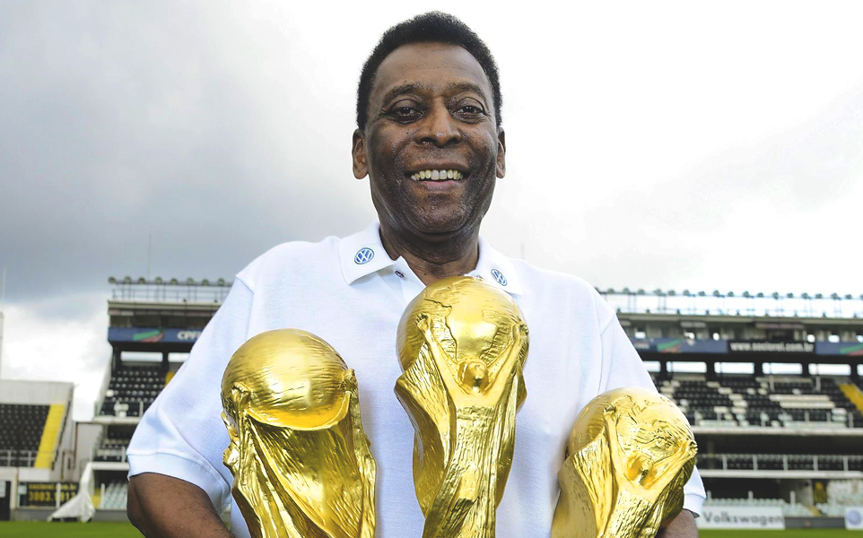
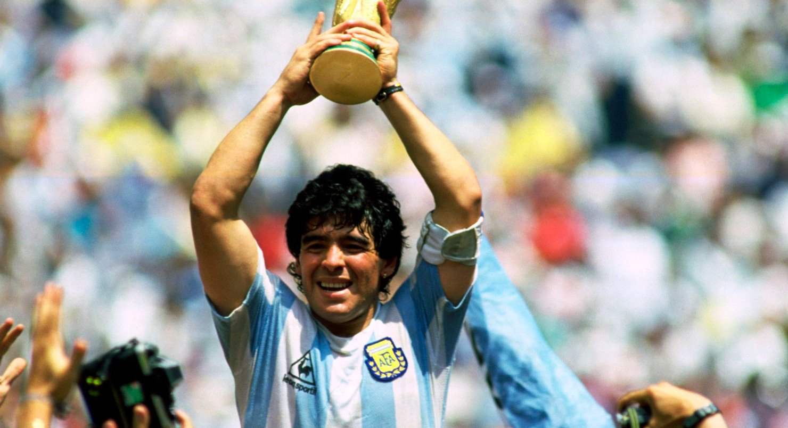
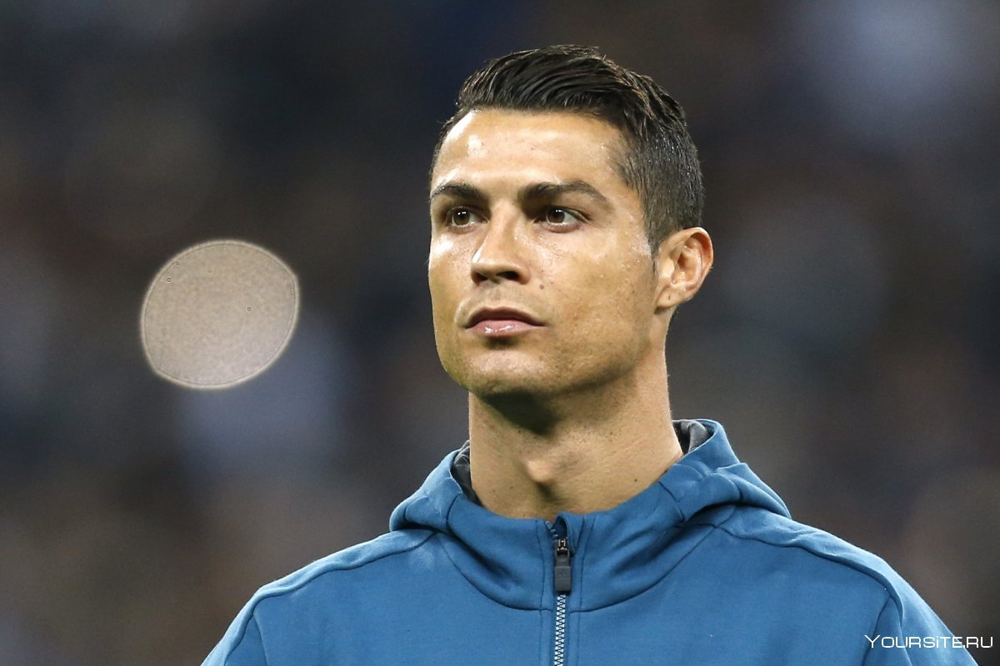
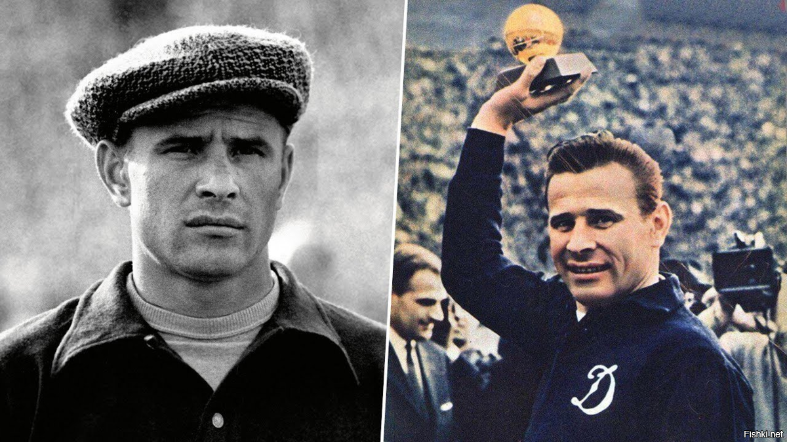

Топ 5 лучших футболистов всего времени
В футболе появилось множество известных игроков, которые оставили неизгладимый след в спорте.
Дебаты о том, кто является величайшим футболистом всех времен, весьма субъективны, мнения
разнятся в зависимости от личных вкусов и предубеждений.
Выбор лучшего игрока когда-либо в любом виде спорта - это вопрос личного мнения, и есть много
факторов, которые невозможно измерить.
Но когда дело доходит до футбола, многие люди считают, что Лионель Месси величайший игрок
всех времен. Он забил массу голов и выиграл практически все возможные награды и трофеи. Его
статус величайшего укрепился, когда Аргентина выиграла чемпионат мира по футболу в Катаре,
особенно после напряженного финала против Франции.
Список лучших футболистов всех времен
1.Лионель Месси –

С 802 голами и 42 трофеями Лионель Месси возглавляет список лучших футболистов всех времен.
Известный своим исключительным дриблингом, точной передачей, невероятным зрением и
результативными способностями забивать голы, Месси установил множество рекордов за свою
выдающуюся карьеру. Большую часть своей карьеры он провел в "Барселоне".
клуб:
1.ФК Барселона (2000-2021)
2.Пари Сен-Жермен (2021 - 2022)
3.Интер Маями (2022 - в настоящее аремя)
Достижения:
С ФК Борселона
1.Многочисленные чемпионаты Ла Лиги
2.Многочисленные титулы в Лиге чемпионов УЕФА
3.Многочисленные титулы Кубка Испании
4.Несколько титулов чемпиона мира среди клубов ФИФА
5.Многочисленные награды Ballon d'Or awards (лучший игрок)
Со Сборной Аргентиной
1.Чемпион Кубка Америки: 2021
2.Золотая олимпийская медаль: 2008
3.Золотой мяч Чемпионата мира по футболу (лучший игрок): 2014, 2018
2. Pelé (Edson Arantes do Nascimento) –

Пеле (Эдсон Арантес ду Насименту) считается одним из величайших футболистов всех времен:
Команды:
1.ФК "Сантос" (1956-1974)
2.Нью-Йорк Космос (1975-1977)
3.São Paulo FC (1975, 1991-1993)
Сборная Бразилии
(1957-1971): 92 матча, 77 голов
Достижения
1.Чемпион чемпионата мира: 1958, 1962, 1970
2.Золотой мяч Чемпионата мира по футболу (лучший игрок): 1970
3.Золотая бутса Чемпионата мира по футболу (лучший бомбардир): 1970
4.Чемпион Кубка Либертадорес в составе "Сантоса ": 1962, 1963
5.10-кратный чемпион " Кампеонато Паулиста" в составе " Сантоса"
Влияние Пеле на футбол выходит за рамки статистики. Его часто считают одним из величайших
футболистов в истории, он известен своими невероятными способностями забивать голы, атлетизмом
и универсальностью на поле. Имя Пеле является синонимом успеха и совершенства в футболе, и он
остается иконой спорта, вдохновляя поколения игроков по всему миру.
3. Diego Maradona –

Диего Марадона считается одним из величайших футболистов всех времен и известен своими невероятными навыками
дриблинга, дальновидностью и способностью забивать потрясающие голы, вот подробная информация о нем:
Команды:
1.Архентинос Хуниорс (1976-1981)
2."Бока Хуниорс" (1981-1982)
3.Барселона (1982-1984)
4.Napoli (1984-1991)
5.Севилья (1992-1993)
6.Ньюэллз Олд Бойз (1993-1994)
7."Бока Хуниорс" (1995-1997)
Со Сборной Аргентиной (1977-1994):
91 матч, 34 гола
Достижения
1.Чемпион чемпионата мира по футболу: 1986
2.Золотой мяч чемпионата мира по футболу (лучший игрок): 1986
3.Золотая бутса Чемпионата мира по футболу (лучший бомбардир): 1986
4.Кубок Испании с " Барселоной": 1983
5.Чемпионаты Серии А с "Наполи": 1986-1987, 1989-1990
6.Кубок УЕФА с "Наполи ": 1988-1989
7.Чемпион Кубка Америки в составе Аргентины: 1983
8.Чемпион Примерного дивизиона Аргентины в составе " Бока Хуниорс ": 1981
4.Криштиану Роналду –

клуб:
1.Чемпионат мира по футболу (2002-2003)
2."Манчестер Юнайтед" (2003-2009)
3."Реал Мадрид" (2009-2018)
4."Ювентус" (2018-2021)
5."Манчестер Юнайтед" (2021 - 2022)
6."Aн-Насар" (2022 - в настоящее время)
Сборная Португалии (дебют во взрослом составе в 2003 году): Продолжается
Достижения С " Манчестер Юнайтед ":
1.Титулы в Премьер - лиге
2.Кубок Англии
3.Титул Чемпиона Лиги чемпионов УЕФА: 2008
4.Награды "Золотой мяч" (лучшему игроку)
Достижения С мадридским " Реалом ":
1.Титулы в Ла Лиге
2.Титулы в Лиге чемпионов УЕФА: 2014, 2016, 2017, 2018
3.Многочисленные награды Ballon d'Or
Достижения С " Ювентусом ":
1.Титулы в Серии А.
Со Сборной Португалии:
Победитель чемпионата Европы УЕФА (Евро): 2016
Победитель Лиги Наций УЕФА: 2019
5.Лев Яшин — советский футболист, вратарь, тренер, олимпийский чемпион.

Родился 22 октября 1929 года в семье московского рабочего.
Обладал прекрасной координацией движений и молниеносной реакцией. Умел предвидеть, как
будет развиваться атака, и выбирать выгодную позицию.
За сборную страны выступал до 38 лет, провёл 78 матчей, 14 сезонов подряд. Наибольшее
число встреч за московское «Динамо» — 326.
Олимпийский чемпион летних Игр 1956 года в Мельбурне.
Трижды признавался лучшим вратарем сезона.
В 1963 году был награждён призом «Золотой мяч» как лучший футболист Европы.
Умер 20 марта 1990 года в Москве.
НАЗАД